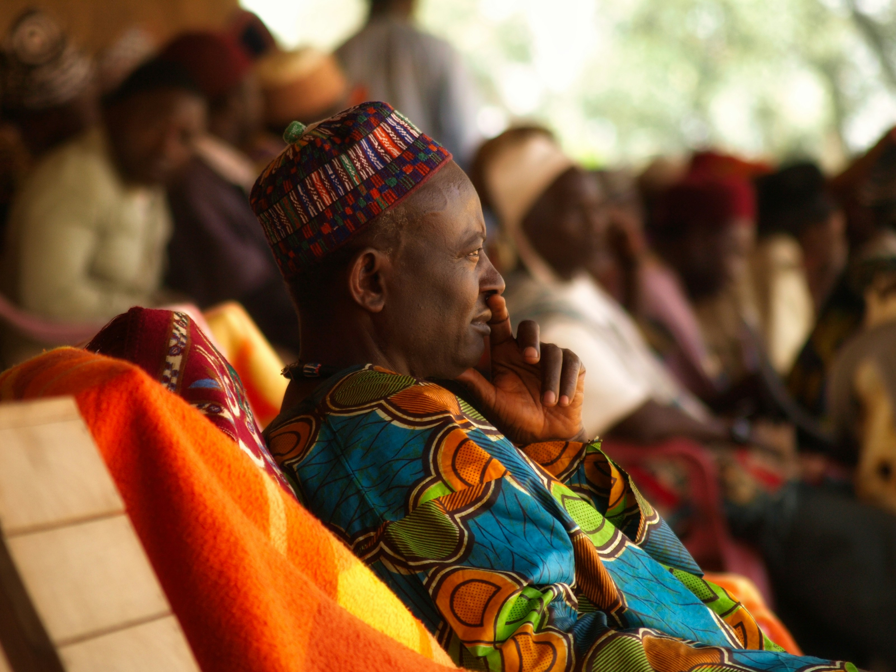
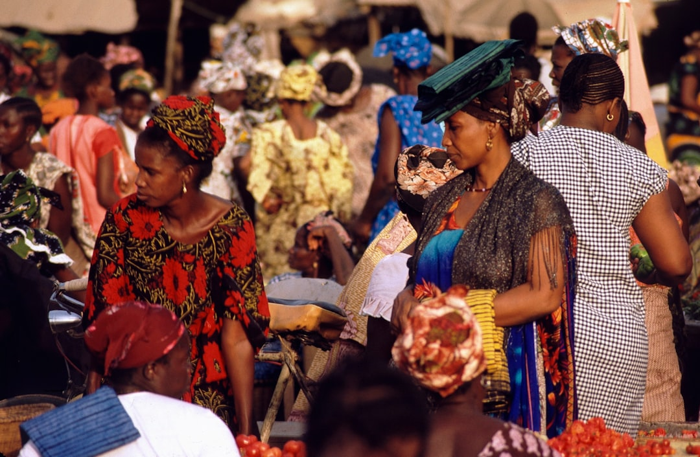
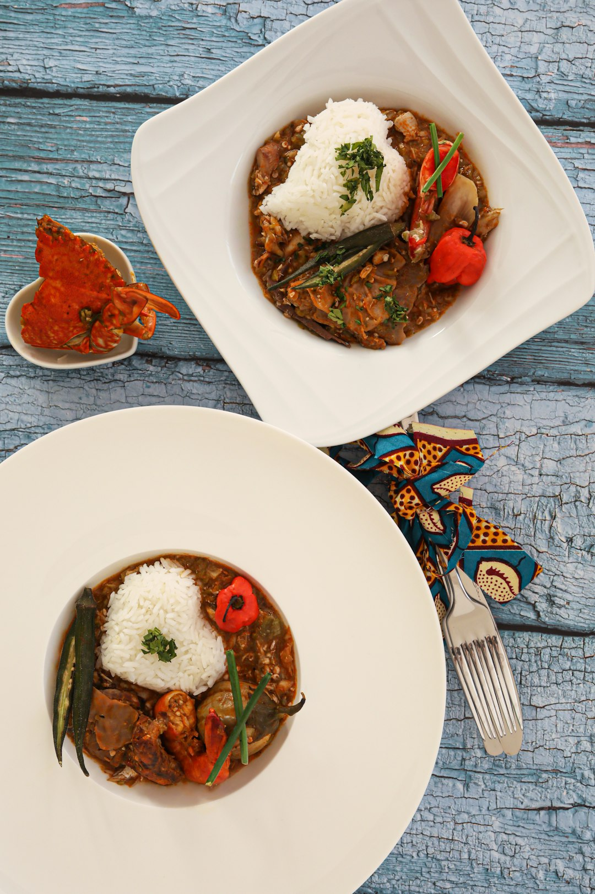

Culture camerounaise
Un patrimoine riche et diversifié
Musique et Danse
Le cameroun est célèbre pour ses rythmes traditonnels comme le
Makossa,le Bikutsi et l'Assiko.Chaque région on possède ses propres
danses et instruments.
Art et Artisanat
L'artisanat camerounais est riche et varié : sculptures sur bois, poterie,
tissage, perles. Chaque ethnie a développé son propre style artistique
unique.
Diversité Ethnique
Plus de 250 groupes ethniques cohabitent au Cameroun, dont les
Bamiléké, Foulbé, Bassa, Douala, et Ewondo. Cette diversité fait la
richesse culturelle du pays.
Gastronomie
La cuisine camerounaise est savoureuse et diversifiée : Ndolé, Eru,
Poulet DG, Koki, Achu... Chaque plat raconte une histoire et une tradition.
Ngondo
Fête traditionnelle du peuple Sawa célébrant l'eau et les
ancêtres.
Nguon
Grande fête royale du peuple Bamoun se tenant tous les deux ans.
Nyem-Nyem
Festival culturel du peuple Toupouri.
Histoire du cameroun
Des royaumes jusqu'aux temps moderne
Les premiers Royaumes
- Migration des peuples Bantous vers la régiion
- Établissement des premières chefferies
- Développement du commerce transsaherien
Royaumes et Commerce
- Arrivée des Portugais sur la côte (1472) - Naissance du nom 'Cameroun' (Rio dos Camarões)
- Fondation du royaume Bamoun
- Traite négrière sur la côte
Colonisation Allemande
- Protectorat allemand (1884)
- Construction d'infrastructures (chemins de fer, ports)
- Résistances locales contre la colonisation
Mandats Français et Britannique
- Partage entre France et Grande-Bretagne après WWI
- Développement de mouvements nationalistes
- Lutte pour l'indépendance (UPC)
Indépendance et République
- Indépendance le 1er janvier 1960
- Réunification avec le Cameroun britannique (1961)
- Développement économique et modernisation
Les Grandes Tribus du cameroun
Découvrez la richesse et la diversité des peuples camerounais
Bamiléké
Connus pour leur sens du commerce et leurs chefferies traditionnelles. Leur art, notamment les masques et les sculptures, est reconnu internationalement.
Traditions principales:
Danse du Tso, architecture à cases rondes, artisanat du bronze
Foulbé (Peuls)
Peuple d'éleveurs nomades islamisés. Ils ont fondé de puissants lamidats et ont joué un rôle majeur dans l'islamisation de la région.
Traditions principales:
Fantasia, élevage de bovins, tressage de nattes
Bassa
Peuple bantou avec une riche tradition orale. Ils sont connus pour leur résistance historique et leur attachement aux traditions ancestrales.
Traditions principales:
Danse Assiko, médecine traditionnelle, contes et légendes
Douala
Peuple côtier qui a joué un rôle crucial dans le commerce avec les Européens. Gardiens des traditions maritimes et de la pêche.
Traditions principales:
Pirogue traditionnelle, festival Ngondo, masques aquatiques
Ewondo
Présents dans la région de Yaoundé, ils ont une riche culture forestière et une tradition de palabres sous l'arbre à palabres.
Traditions principales:
Mvet (épopée chantée), sculpture sur bois, agriculture
Bamoun
Royaume unifié avec une histoire écrite. Le sultan Njoya a créé un système d'écriture propre au peuple Bamoun au début du XXe siècle.
Traditions principales:
Écriture Bamoun, palais royal, artisanat du cuivre


Une Mosaïque Linguistique
Le Cameroun compte plus de 280 langues locales. Le français et l'anglais
sont les langues officielles, héritage de l'histoire coloniale. Le Pidgin English et
le Camfranglais sont également largement parlés.